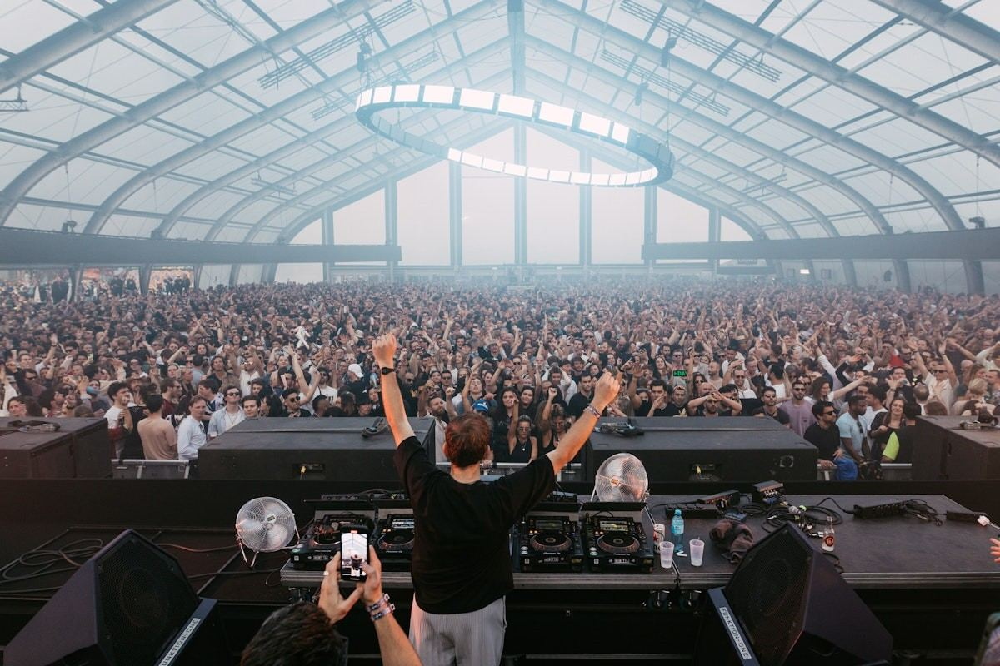

Festivals · Music
DGTL Amsterdam 2027
- Dates
- –
- Venue
- NDSM Docklands, Amsterdam
- Location
- Amsterdam, Netherlands
- Format
- In-person
- Category
- Music
- Industry
- Electronic music festival
- Organiser
- DGTL
- Official website
- https://www.dgtl.nl/
About
Dates are local to the host city (Central European Time, UTC+1 / UTC+2 in summer).
Topics: electronic music, techno, festival.
No organiser attendance figure found on the official pages fetched 24 Nov 2026. Ranked by our estimated size tier 'large' (30,000-100,000 attendees/visits), a judgement from format, venue and scale, not an official number.
Sources
- Official — https://www.dgtl.nl/
Hotels
- Anantara Grand Hotel Krasnapolsky Amsterdam — 5★ · Dam 9, 1012 JS Amsterdam, Netherlands · 3.1 km from the venue · Price on request
- Grand Hotel Amrâth Amsterdam — 5★ · Prins Hendrikkade 108-114, 1011 AK Amsterdam, Netherlands · 3.0 km from the venue · Price on request
- Hotel Twenty Seven — 5★ · Dam 27, 1012 JS Amsterdam, Netherlands · 3.1 km from the venue · Price on request
- NH Collection Amsterdam Barbizon Palace — 5★ · Prins Hendrikkade 59-72, 1012 AD Amsterdam, Netherlands · 2.7 km from the venue · Price on request
- Pulitzer Amsterdam — 5★ · Prinsengracht 323, 1016 GZ Amsterdam, Netherlands · 3.1 km from the venue · Price on request
- Sofitel Legend The Grand Amsterdam — 5★ · Oudezijds Voorburgwal 197, 1012 EX Amsterdam, Netherlands · 3.3 km from the venue · Price on request · Venue page
- NH Amsterdam Noord — 4★ · Distelkade 21, 1031 XP Amsterdam, Netherlands · 1.5 km from the venue · Price on request
- Room Mate Aitana — 4★ · IJdok 6, 1013 MM Amsterdam, Netherlands · 1.7 km from the venue · Price on request
- Sir Adam Hotel — 4★ · Overhoeksplein 7, 1031 KS Amsterdam, Netherlands · 1.9 km from the venue · Price on request
- Westcord Art Hotel Amsterdam 4-stars — 4★ · Spaarndammerdijk 304, 1013 ZX Amsterdam, Netherlands · 1.8 km from the venue · Price on request